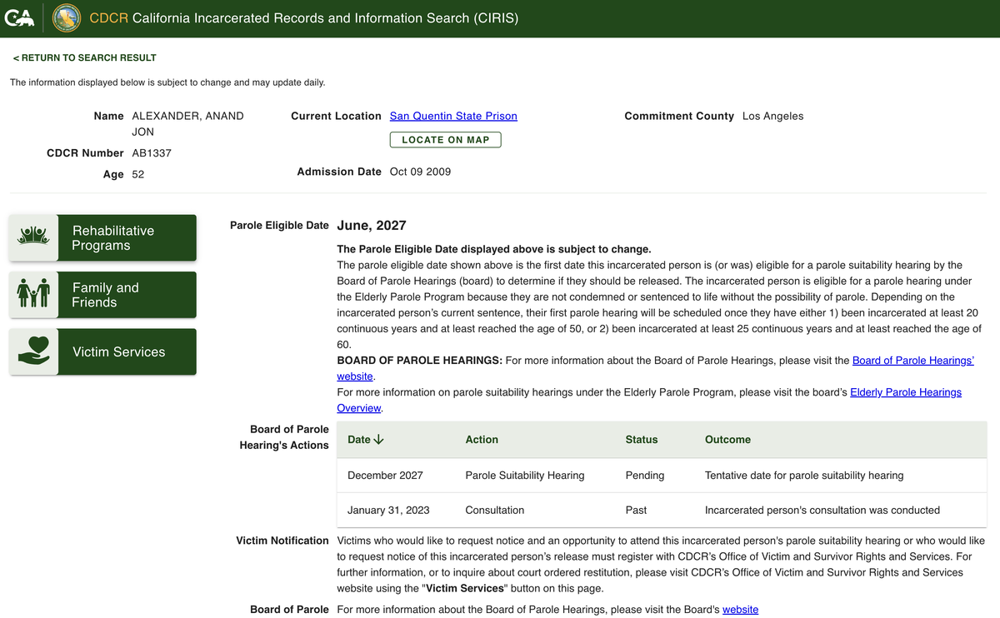

Anand Jon Alexander is the fashion designer convicted in Los Angeles of multiple sexual assaults against young women and girls, several of them teenagers who believed he could make them models. He has been in California state custody since 2009 and is currently held at San Quentin. His CDCR number, which is public, is AB1337.
Here is the part almost nobody knows, and the reason this page exists now.
He is up for parole in 2027

According to California's own inmate records system, Anand Jon is eligible for parole in June 2027 under the state's Elderly Parole Program, and a parole suitability hearing is tentatively set for December 2027. A required pre-hearing consultation was already conducted in January 2023.
Elderly parole does not mean automatic release. It means a panel will hold a hearing to decide whether he should be let out, and by law that panel has to give special consideration to his age and years served. In other words, the clock is running, and there is an organized effort working to walk him through that hearing. What the panel hears from the people he harmed can matter enormously.
You have the right to be notified and to be heard
Under California's victims' rights law, if you are a victim or survivor in this case you have the right to be told when his parole hearing is happening, to attend it, to speak at it, to send someone to speak for you, or to submit a written statement the panel will read. You also have the right to be notified if he is ever released.
None of this happens automatically. You have to get on the list, and it is free.
How to register with CDCR's Office of Victim and Survivor Rights and Services
- Phone: 1-877-256-6877
- Email: victimservices@cdcr.ca.gov
- Or ask them for the "Request for Victim Services" form (CDCR 1707)
Do this as early as you can. Hearing dates move, and you only find out about the new date if you are already registered.
You do not have to face the room to be heard. A letter counts. A recorded statement counts. A stand-in counts.
If he, or someone acting for him, is contacting you now
Survivors in this case have reported being contacted while he has been incarcerated, sometimes through other people acting on his behalf. If that is happening to you, a few things are worth knowing.
Save everything. Screenshots, phone numbers, usernames, dates, and the names of anyone who reached out for him. Do not delete the messages, even if your instinct is to make them disappear. That record is evidence.
You do not owe him a response, and you do not have to engage. Contact like this, especially anything that feels like pressure, monitoring, or a request to change or soften your account, can be a serious matter on its own, and it is directly relevant to whether he is safe to release.
You can report it. To the prison, through OVSRS at the number above. To your local police if you feel unsafe. And to the Los Angeles County District Attorney's Office, which prosecuted the original case. Reporting it also builds the record a parole panel should see. If you are ever in immediate danger, call 911.
If you want to tell your story
This site is part of an ongoing investigation into that pattern. If you were approached by Anand Jon or by anyone on his behalf, at any point from 2009 to now, we would like to hear from you, on whatever terms feel safe.
You can write to localtip@proton.me. Proton is an encrypted email service, so if you want an extra layer of privacy you can make a free Proton account and write from that. Tell us as much or as little as you want. We will not publish your name or anything that identifies you without your explicit permission. You are in control of what happens with what you share.
Talking to a journalist is not the same as exercising your official rights, and it is not a substitute for registering with OVSRS or reporting to law enforcement. Please do those things too. But if you want your experience on the record, and handled with care, the door is open.
You are not the only one
If reading this stirred something up, that is normal, and it is okay to take a breath. Reach out to someone you trust. If you want to talk to a trained advocate confidentially, the free, 24/7 RAINN National Sexual Assault Hotline is 1-800-656-4673, and there is a chat option at online.rainn.org.
What happened to you was not your fault. What you do next is your choice, and every one of those choices is legitimate, including simply getting on the notification list so no one can move him without you knowing.
Official resources
- CDCR Office of Victim and Survivor Rights and Services: cdcr.ca.gov/victim-services
- CDCR parole hearing information for victims: cdcr.ca.gov/victim-services/parole-hearing-info
- California Elderly Parole Program overview: cdcr.ca.gov/bph/elderly-parole-hearings-overview
- Inmate record (CIRIS), CDCR AB1337: ciris.mt.cdcr.ca.gov